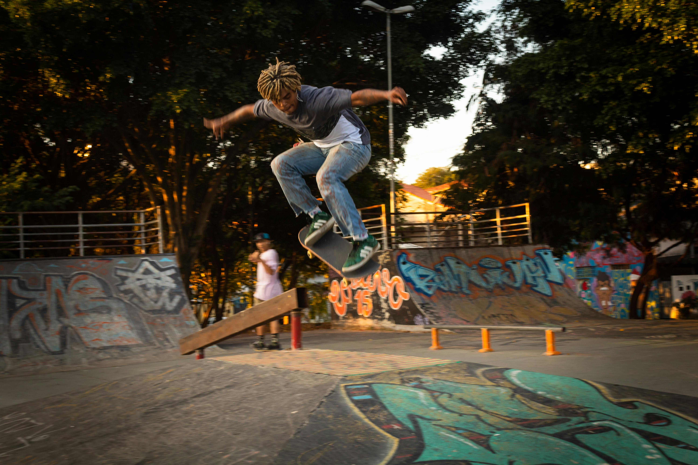
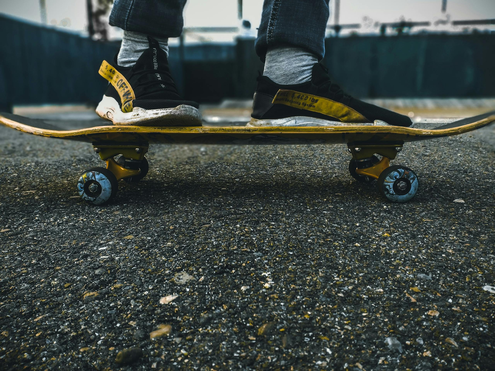
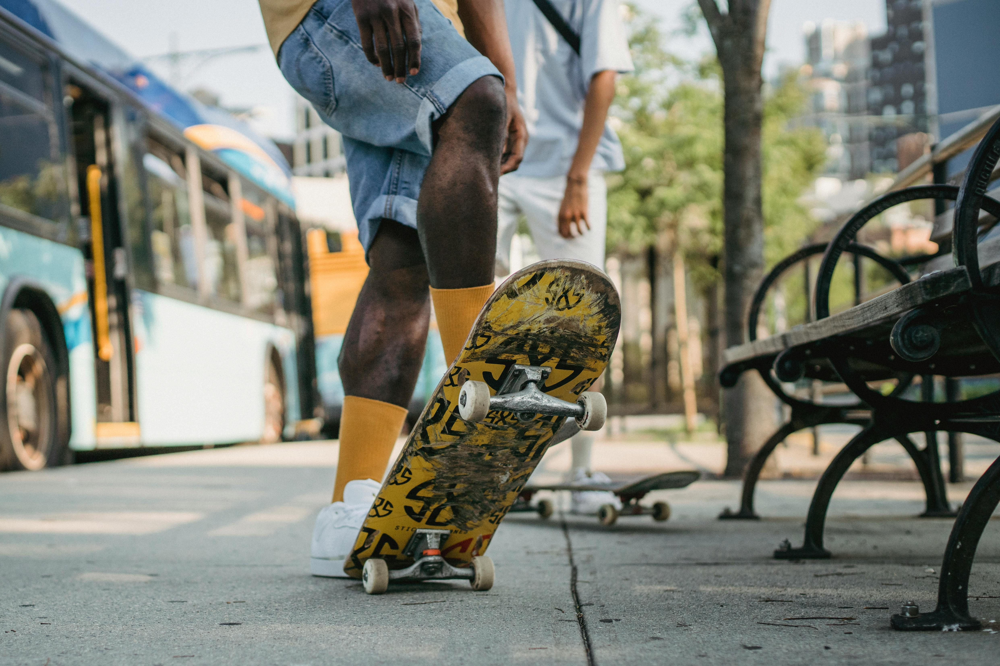
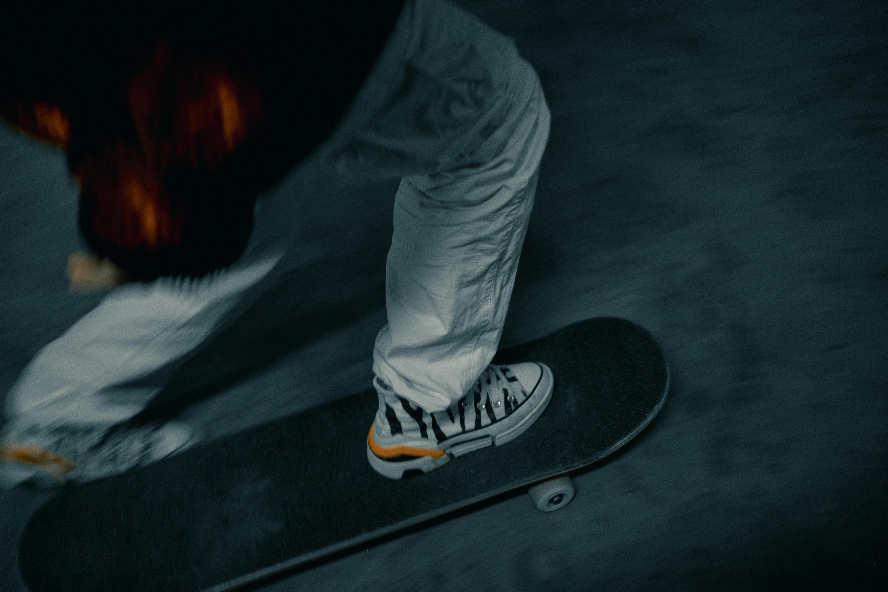

la skateboard est un sport et un loisir
qui consiste à se deplacer et à réaliser des figures avec une planche appelée skateboard.
Ce sport est apparu aux Etats-Unis dans les années 1950 et est aujourd'hui pratiqué dans le monde entier.
Le skateboard demande de l'équilibre, de la concentration et beaucoup d'entrainement pour réussir les différentes figures.
Il existe Plusieurs styles de skate comme :
Le skateboard en street est une discipline spectulaire qui se pratique principalement dans la rue.
Contrairement au skatepark ou à la rampe, le street utilise les éléments urbains comme:
Les trottoirs,les escaliers, les bancs et les rampes.
Cette pratique demande beaucoup de technique, d'équilibre et de créativité.

Parmi les figures de base, l'ollie est la plus importante.
C'est un saut réalisé sans les mains qui permet de franchir des obstacles.
A partir de cette figure, plusieurs variantes existent comme le kickflip, où le skateur roule uniquement sur les roues arrière.
En street, on trouve également les grinds et les slides.
Les grinds consistent à glisser sur un rail ou un rebord avec les trucks (les axes métalliques de la planche ), comme le 50-50 grind.
Les slides, quant à ceux, consistent à glisser avec la panche elle-meme, comme le boardslide.
Ces figures sont souvent réalisées sur des rampes d'escaliers sur des bares métalliques, ce qui rend la pratique encore plus impressionnante.
Le park est une discipline du skateboard qui se pratique dans un skatepark, un space specialemant construit avec diffrentes structes pour permerttre aux skaters de realiser des figures.
Dans ce type de discipline, les skaters utilisent des rampes des courbes et des cuvettes appelées bowls pour prendre de la vitesse et effectuer des sauts et des tricks.

Le park demande beaucoup d'équilibre, de téchnique et de créativité.
Les skateurs doivent enchainer plusieurs figures tout en gardant leur vitesse et leur controle sur la planche.
Plus les figures sont difficiles et bien excutées, plus la performance est impressionnante.
le freestyle est une discipline du skateboard où le skateur réalise des figures techniques sur une surface plate, sans utiliser de rampes ou d'obstacles.
Le but est de montrer son équilibre, son controle de la planche et de sa créativité.

Dans le freestyle,le skateur enchaine plusieurs tricks en restant souvent au sol ou en faisant de petits sauts.
les mouvements peuvent inclure des rotations de la planche, des équilibres sur une ou deux roues et différentes combinaisons de figures.
Chaque skateur peut creér son propre style et inventer de nouveaux mouvements.
Cette discipline demande beaucoup de pratique , de concentration et de précision.
Les skateurs doivent bien controler leur planche pour réussir leurs figures sans tomber
le downhill est une discipline du skateboard où le skateur descends des pentes ou des collines à grande vitesse.
l'objectif est de controler la planche tout en prenant de la vitesse pour faire une descentes fluides et sécurisées

Cette pratique demande du courage,de l'équilibre et une bonne maitrise de la planche. il downhill est apprecié par ceux qui aiment la vitesse et les sensations fortes.